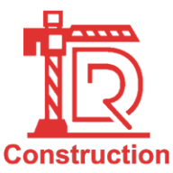
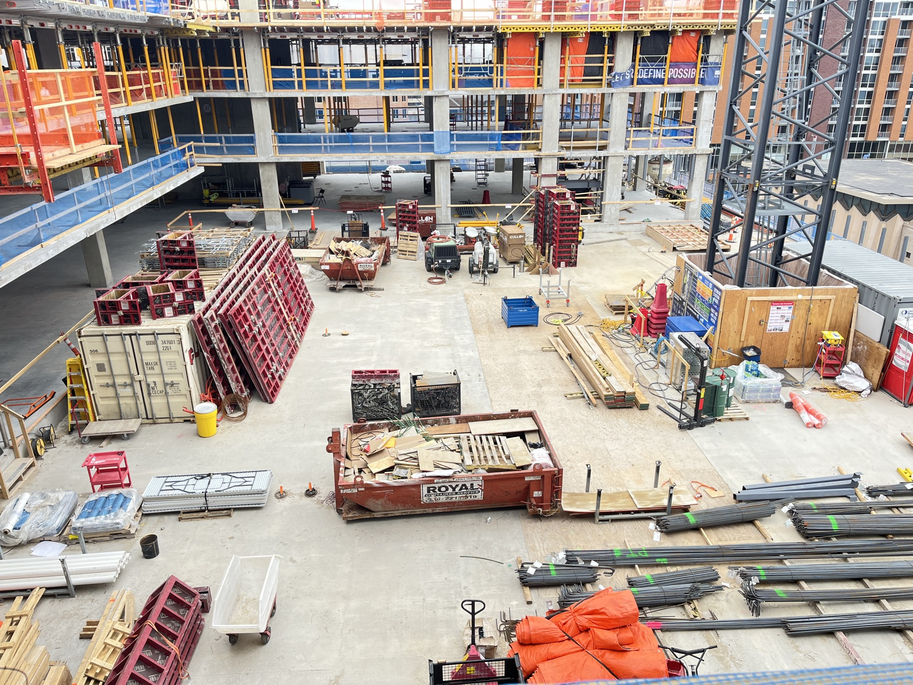
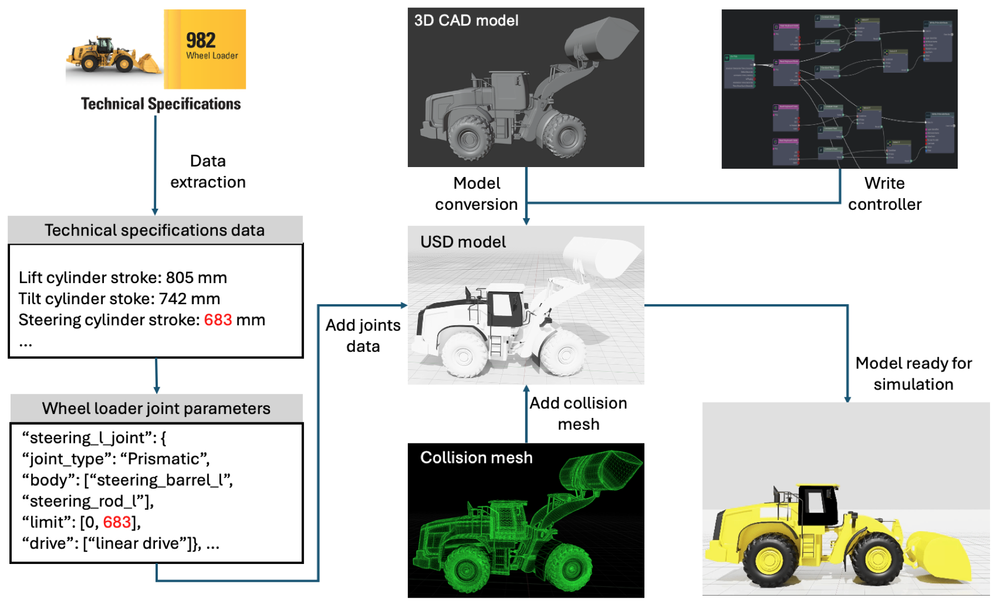
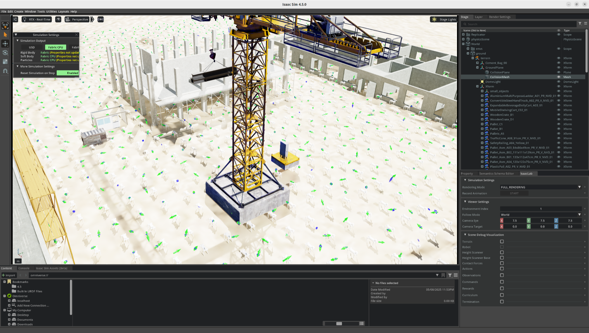
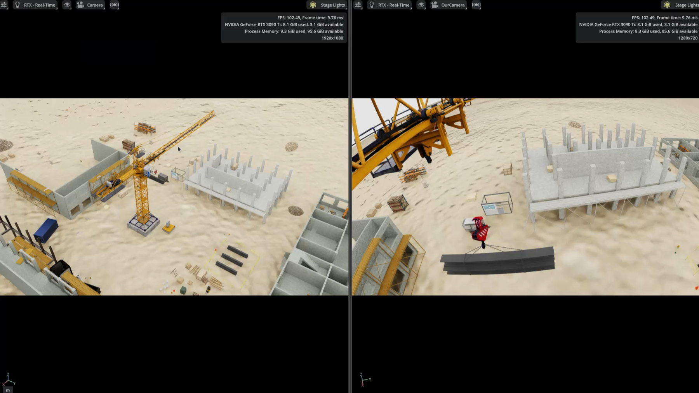

Construction-aware safety
Safety is defined beyond collision avoidance: robots should avoid interfering with work, entering restricted zones, blocking access paths, or moving through equipment operating areas.

DARC Construction Site BenchmarkConstruction-aware robot navigation benchmark
A physics-enabled Isaac Sim and Isaac Lab environment for training and testing robots that must navigate active construction sites without creating safety violations or disrupting ongoing work.
Overview
In construction, navigation failure is not limited to collision or timeout. A robot can reach a waypoint and still fail the jobsite: entering an equipment work range, crossing a cordoned area, damaging temporary protection, slipping on loose gravel, catching a leg in staged material, or undoing cleanup work that a crew just completed.
DARC Construction Site Benchmark starts from these in-the-wild navigation hazards and converts them into controlled, repeatable Isaac Sim and Isaac Lab scenarios. The goal is to evaluate construction-aware navigation: whether a robot can make progress while respecting the operational meaning of temporary safety boundaries, equipment work envelopes, access routes, material staging areas, fragile fixtures, and ongoing work.
Safety is defined beyond collision avoidance: robots should avoid interfering with work, entering restricted zones, blocking access paths, or moving through equipment operating areas.
The environment supports robots and construction equipment, including quadrupeds, forklifts, wheel loaders, excavators, trucks, and tower cranes.
Scenes, tasks, safety rules, synthetic data collection, and held-out testing splits are organized for repeatable comparison of construction navigation methods.
Field evidence
These clips motivate the benchmark design: each failure mode is hard to capture with ordinary collision metrics, but directly affects whether a robot can be safely deployed around people, materials, equipment, and unfinished work.
Unfinished ground surfaces make traversability depend on traction, slope, gravel depth, and local stability rather than geometry alone.
A robot may reach its goal but still disrupt ongoing work by kicking loose material into areas that workers have just cleaned.
Staged materials can trap feet or change the effective body envelope, exposing risks that are not captured by simple obstacle clearance.
Robots need to reason about operating envelopes and blind spots around loaders, excavators, trucks, cranes, and other active equipment.
Construction restrictions are often temporary and semantic; a tape, barrier, or laydown boundary can invalidate an otherwise passable route.
Temporary covers and unfinished fixtures are part of the site state; damaging them is a navigation failure even without a major collision.
Motivation
Construction sites combine mobility, safety, and production constraints that are only partially covered by existing navigation benchmarks. They are not just cluttered indoor spaces, and they are not road networks; they are temporary production systems whose routes, hazards, workers, materials, and equipment change with the construction sequence.
Social navigation benchmarks focus on pedestrians, comfort, and interpersonal spacing. On jobsites, people are part of work operations: they clean, install, lift, stage, signal, and coordinate around temporary hazards that a robot must not interrupt.
Autonomous driving assumes roads, lanes, signs, and relatively standardized traffic rules. Construction navigation has ad hoc access paths, unfinished surfaces, shifting barriers, material laydown zones, and heavy-equipment work envelopes that may not appear in a static map.
Construction robot navigation is still evaluated through custom sites, custom tasks, and custom metrics. Without shared scenes, splits, task definitions, and safety-violation measures, it is difficult to compare methods or quantify real improvement.
Environment library
The virtual environment is built around the operational features that make construction navigation difficult: unfinished structures, staged materials, temporary routes, active equipment, uneven terrain, and indoor-outdoor transitions.





Benchmark protocol
The benchmark focuses on construction-aware navigation. Agents are evaluated in simulated jobsites with changing layouts, temporary safety constraints, staged materials, and nearby construction equipment.
Success rate, path efficiency, SPL, completion time, rule violations, proximity events, stuck events, work-interference events, and context-sensitive safety failures.
Synthetic data collection, model development, validation, model testing, held-out layouts, and stress tests with unseen material placement and equipment activity.
Quadruped robots and site equipment such as forklifts, wheel loaders, excavators, trucks, and tower cranes can appear as agents, obstacles, or operational context.
Leaderboard
| Method | Task Suite | Success | Safety | Status |
|---|---|---|---|---|
| To do | To do | To do | To do | To do |
Video demos
These demos show the current Isaac Sim and Isaac Lab environment assets that support construction equipment context and robot navigation evaluation.
Simulated lifting context for evaluating route planning around crane operation areas.
Construction equipment context for testing navigation around active machinery and material flow.
Mobile robot traversal in the virtual construction site for navigation evaluation.
Resources
The current website is prepared for an academic release package: simulator assets, task definitions, synthetic data scripts, evaluation code, and documentation.
Isaac Sim scene files, construction asset library, robot and equipment configurations, task JSON files, and benchmark evaluation scripts.
Scene randomization, route generation, object annotations, safety-rule labels, and navigation demonstrations for training and analysis.
Installation, environment setup, task API, metric definitions, safety-rule specification, and submission format will be documented with the benchmark release.
GitHub repository for the project website and future benchmark materials.
Team
Developed at the Digital and Robotics Construction Lab (DARC), University of Wisconsin-Madison.
Acknowledgements
We acknowledge the ASCE Annual Visualization, Information Modeling and Simulation (VIMS) Committee for providing part of the construction site assets used in this project. We also acknowledge the Isaac Sim Assets Store as a source of simulation assets for developing the virtual construction environment.
Citation
Add paper metadata, BibTeX, dataset license, asset license, and benchmark terms here when the formal release is ready.
@misc{darc_construction_site_benchmark,
title = {DARC Construction Site Benchmark},
author = {Xu, Liqun and Han, Wei and Nie, Wenjian and Ding, Yujie and Zhu, Zhenhua},
year = {2025},
note = {Isaac Sim and Isaac Lab virtual construction site environment}
}